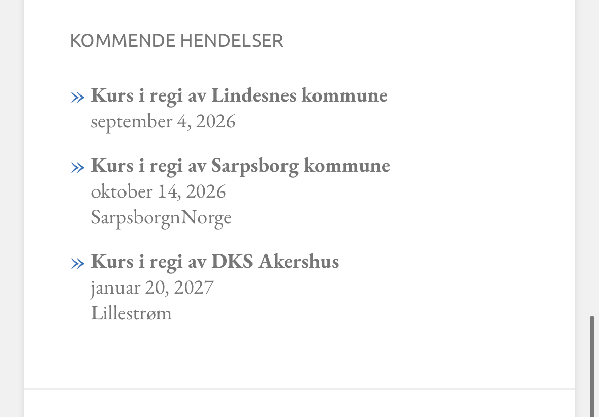

Mer enn et bokbad
Det er altså ikke selve arrangementet dette egentlig handler om, men alt det som skjer i forkant. Høytlesingen, samtalen, refleksjonene, lyttingen. Fellesskapet.
For med utgangspunkt i en felles litterær opplevelse, loses deltakerne gjennom tre samtaler der de tilnærmer seg teksten fra tre ulike vinkler gjennom tre ulike øvelser:
- Først brukes forelegget til å lære spørsmålsteori gjennom spørsmålskvadranten, utviklet av Phil Cam.
- Neste øvelse er «kollektiv hukommelse», der deltakerne snakker seg inn i teksten gjennom karakterene.
- Siste tilnærming handler enkelt sagt om valg, og etiske, dramaturgiske eller karakter(ut)byggende konsekvenser av dem.
Underveis produserer deltakerne spørsmål (med kvadranten som hjelpemiddel) som enten brukes i det nevnte bokbadet eller som utgangspunkt for grundige samtaler om en problemstilling eller et tema.
Erfaringsmessig ser vi at kursdeltakere (kanskje spesielt lærere, men også bibliotekarer og i og for seg alle som jobber med mennesker) nokså raskt får øye på at de kan anvende metodikken, hele eller deler av den, også i andre sammenhenger enn en litterær samtale. Både i møte med andre kunstuttrykk enn litteratur og andre fag enn norsk. Altså med andre type tekster og materiale som utgangspunkt for samtalene, og da med helt andre mål enn et typisk Barnebokbad.
Og i dette øyeblikket blir navnet Barnebokbad noe misvisende, fordi:
Metoden er ikke bundet til verken barn eller (skjønn)litteratur alene. Det er avgrensningen som er nøkkelen, og at deltakerne har felles forståelse av hva denne er.
I en roman er det lett: Avgrensningen gir seg selv i form av permer. Men! Dersom du ønsker å bruke noveller eller poesi eller en fransk kortfilm eller en teaterforestilling som kommer til skolen gjennom DKS. Om du skal utforske byggeskikk på 1600-tallet eller bli kjent med et maleri fra samme epoke, eller hvis noen skal lære om 1. verdenskrig og du tenker at skuddene i Sarajevo er et sted å begynne (som for øvrig også åpner døra for en diskusjon om hvorvidt krig noen gang kan være bra), eller du vil utfordre begrepene Medvirkning og Demokrati i lys av Roger Hart's «Ladder of Children's participation», for eksempel – så finnes det muligheter der òg.
Metodikken er ikke utviklet for å huke av på kompetansemål, men er ofte nyttige verktøy på veien dit likevel. I tillegg åpnet Fagfornyelsen opp for nye muligheter (selv med læreplan i matematikk), gjennom grunnleggende verdier og prinsipper i overordnet del og forventning om tverrfaglig fordypning.
Når vi holder kurs bruker vi som regel en roman som avgrensning og felles utgangspunkt; altså at alle har lest den samme teksten som forberedelse. Romanen har nemlig vist seg å være det «rauseste» og mest begripelige utgangspunktet for å få fatt i alle lagene i metoden, og best for å illustrere mulighetene som åpenbarer seg, nettopp gjennom arbeidet med den. Kurset er gjennomgående praktisk der deltakerne blir ledet gjennom metoden og samtalene, på samme måte som de selv vil (være i stand til å) lede samtaler etterpå.

Har du andre spørsmål, for eksempel i gaten av:
Er det en aldersgrense for denne måten å jobbe på?
Funker det med ungdom og voksne?
Er det faglig nok?
Hvor lang tid tar det?
Hvor mange kan man ha i en gruppe?
Hva med dem som ikke kan lese?
osv.
Ta kontakt med post@barnebokbad.no